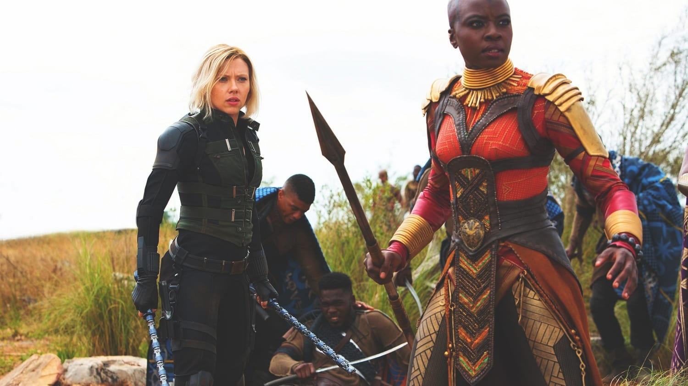

AVENGERS:INFINITY WAR
Release date: 26 Apr 2019 (United States)
Directors: Jennifer lee
Languages: English
Summary: 2020· 3hr 1min
Adventure/Action
Costume designer: Judianna Makovsky
Music by: Alan Silvestri
SUMMARY
Avengers: Infinity War begins with Thanos and his lieutenants intercepting the Grandmaster’s spaceship carrying Asgard’s survivors from Thor: Ragnarok. Thanos now has one of the six Infinity Stones which he nabbed from the planet Xandar. He and Ebony Maw, Cull Obsidian, Proxima Midnight, and Corvus Glaive are now out to get the Space Stone from the Tesseract. Thanos takes down Thor before overpowering the Hulk and sending him to Earth via the Bifröst. He kills Loki, Heimdall, destroys the ship and leaves with the Stone and his men.When Hulk crashes into the Sanctum Sanctorum in New York City, he transforms back into Bruce Banner. Once he lets Stephen Strange and Wong in on Thanos’ plan to kill half of all life in the universe, they go to Tony Stark for help. As Maw and Obsidian arrive to steal the Time Stone from Strange, their presence attracts the attention of Peter Parker. Maw nabs Strange, but is unable to retrieve the Time Stone due to Strange’s enchantment on it. Stark and Parker next sneak onto Maw’s spaceship while Banner gets ahold of Steve Rogers. We head over to Edinburgh where Proxima Midnight and Corvus Glaive attack Wanda Maximoff and Vision to steal the Mind Stone in Vision’s forehead. Rogers, Natasha Romanoff, and Sam Wilson are able to save them, and hide at the Avengers HQ. There, Vision wants Maximoff to destroy the Mind Stone, but that will kill him. Instead, Rogers wants to head to Wakanda, because he thinks they can remove the Stone without destroying Vision. Meanwhile, the Guardians of the Galaxy respond to a distress call from the Grandmaster’s ship, and they rescue Thor. Thor believes Thanos is going to next go after the Reality Stone the Collector has on Knowhere. Thor sets out to Nidavellir with the Guardians in tow. There Eitri creates Stormbreaker, a battle-axe capable of killing Thanos. When the team arrives on Knowhere, Quill, Gamora, Drax, and Mantis find Thanos already has the Reality Stone. With some free time to kill, Thanos kidnaps Gamora, his adopted daughter. In order to save her sister, Nebula, from torture she tells Thanos the Soul Stone is on Vormir. They head to Vormir, where the Stone’s keeper, Red Skull, tells Thanos that he can only get the Stone after sacrificing someone he loves. Easy choice for our Mad Titan; he kills Gamora, and gets the Stone. Nebula manages to escape, and contacts the remaining Guardians. She has them meet her on Thanos’s destroyed home world of Titan. Meanwhile, Stark and Parker kill Maw to rescue Doctor Strange. They too head to Titan where they meet Quill, Drax, and Mantis. Strange uses the Time Stone to view the millions of possible futures, but only sees one where Thanos loses. So, they make a killer plan to attempt to subdue Thanos while they remove the Infinity Gauntlet from his hand. Thanos now appears, and tries to justify his plans of destruction because overpopulation threatens the universe. When Nebula arrives, she helps everyone subdue Thanos, but when she figures Thanos killed Gamora, shit hits the fan. Peter angrily attacks Thanos which allows him to break the group’s hold on him and overpower them. Thanos seriously wounds Stark, but he is spared when Strange surrenders the Time Stone. Wakanda is up next. Rogers reunites with Bucky Barnes there as Thanos’s army invades the African nation. The Avengers fight alongside T’Challa and his forces to defend their country while Shuri tries to extract Vision’s Mind Stone. Banner can’t go green, so he fights in Stark’s Hulkbuster armor. Thor, Rocket, and Groot also arrive to help fight. They kill Thanos’ lieutenants Midnight, Obsidian, and Glaive, and take out his army. However, Shuri can not remove the Stone. Thanos arrives to retrieve it, but before he can Wanda destroys it. No sweat for Thanos though. He uses the Time Stone to reverse Wanda’s destruction of the Mind Stone. He then rips the repaired version from Vision’s forehead which kills him instantly. Thor attacks Thanos with a swing of Stormbreaker into his chest. Thanos manages to survive long enough to snap his fingers with all the Stones now in the gauntlet. Let the Decimation begin! With Thor looking on in horror, Thanos teleports away. Bucky Barnes, Groot, Peter Parker, Peter Quill, Dr Strange, T’Challa, Sam Wilson, Drax, Mantis and Wanda Maximoff all dissolve into terrible CGI ash. In Wakanda, only Rogers, Thor, Banner, Romanoff, James Rhodes, Rocket, Okoye and M’Baku survive while on Titan, only Nebula and Stark remain. Thanos wakes fully healed on another planet, and enjoys a lovely sunset; satisfied that he won…even though it cost him everything. In a post-credits scene, the Earth dissolves into chaos. Former S.H.I.E.L.D. Director Nick Fury and Deputy Director Maria Hill look on before they dissolve into ash themselves. As Fury vanishes, he sends a S.O.S. to Captain Marvel via a modified 1990s beeper